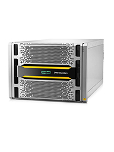

HPE StoreServ 9000 Tech Specs:
Model, 9450
StoreServ 9450
- Over 2 million IOPs
- Two 10-core 2.4GHz processors per node
- Less than 1 milliseconds (ms) latency
- 9450 Max drives 576 (SSD)
- 9450 Max capacity 6000 TiB
- 9450 Max file capacity 512 TiB
- 9450 2-4 controllers
- 9450 number of add on enclosures 48
- 9450 Max Host ports 80
- 9450 Max cache 896 GiB
- 9450 Max on node cache 448 Gib
- 9450 Max Flash Cache N/A
- SSD Only (no spinning devices)
StoreServ 9450 additional specs
- Faster Processors
- 2 Gen 5 ASIC per node
- RAID Levels 0,1,5,6
- SFF SSD 400GB, 1.92TB, 3.84TB, 7.68TB, 15.36TB
- SFF FIPS SSD 3.84TB, 7.68TB, 15.36TB
- Min SSD's per node pair = 6
Features:
- Snapshots, Remote Copy, Thin Provisioning
- Application integration
- Oracle, VMware, SQL, Exchange etc
- Max VV per system 8,192
- Max Base VV 4,095
- Max VLUNs 32,000
- Max Snap per VV = 500
- MAX CPG per system 2,048
- Max Domain per system 1,024
- Max iSCSI Initiators = 64 per port
- Max FC Initiator = 1024 per node pair
- Max Hosts is ~= Max Initiator/2
- HPE 3PAR StoreServ Data Encryption
- Compression
- Thin Dedupe
- File Persona
- Adaptive Flash Cache
- Persistent Ports
- Cache Persistence
- Virtual Domains
- Snapshots
- System Reporter
- AO,DO
- QOS
- Peer Persistence
- Migration tools